1. Acceso al sistema
Cómo entrar al sistema con tu usuario y contraseña.
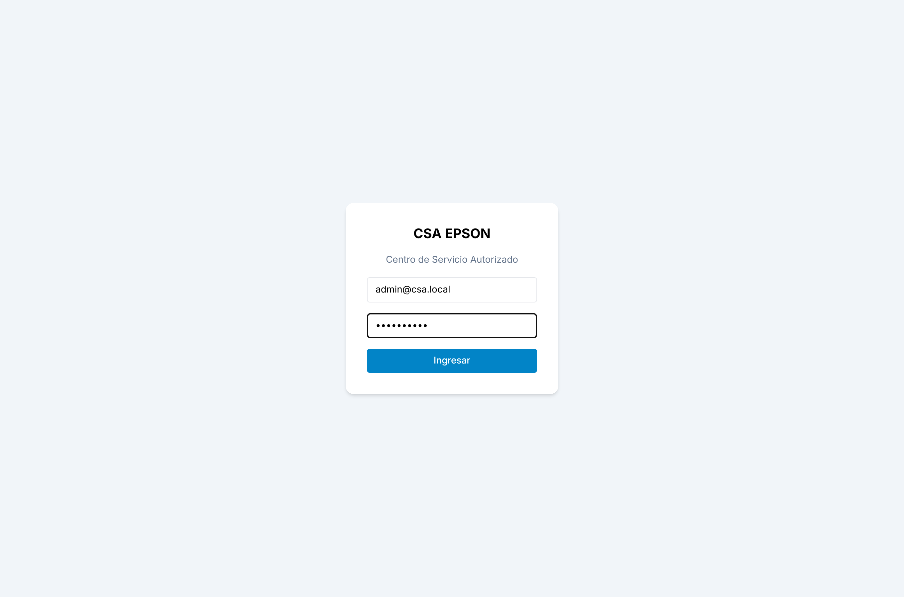
- Abre el navegador y entra a la dirección del sistema (por ejemplo
http://64.177.83.100:8080). - Escribe tu correo/usuario y tu contraseña.
- Haz clic en Ingresar. Entrarás al Panel.
3. Panel Inicio
Un vistazo rápido del taller: cuántas órdenes están activas, en reparación, entregadas o esperando autorización.
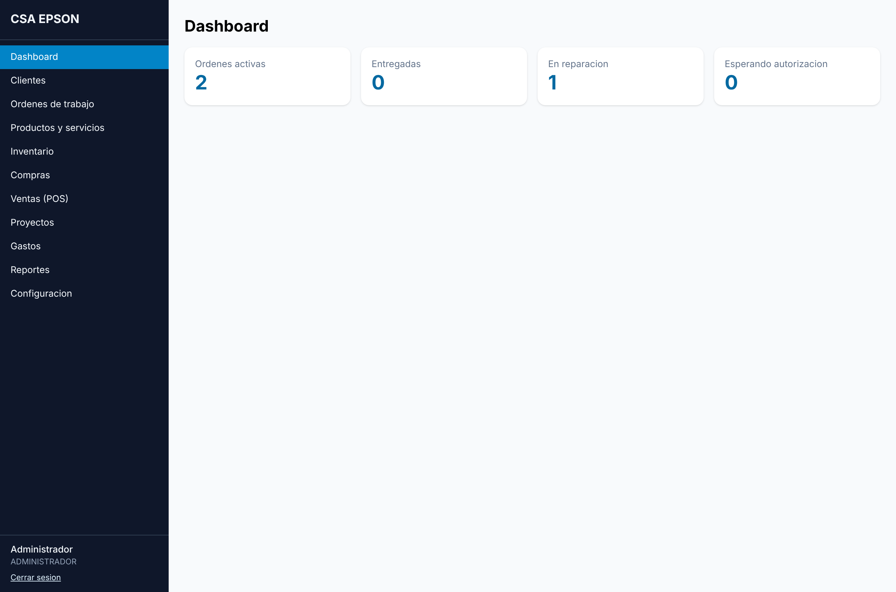
Es la pantalla que aparece al entrar. No se captura nada aquí: solo informa. Para ver números financieros detallados usa Reportes.
4. Clientes
Registro de clientes (personas y empresas) y sus datos fiscales.
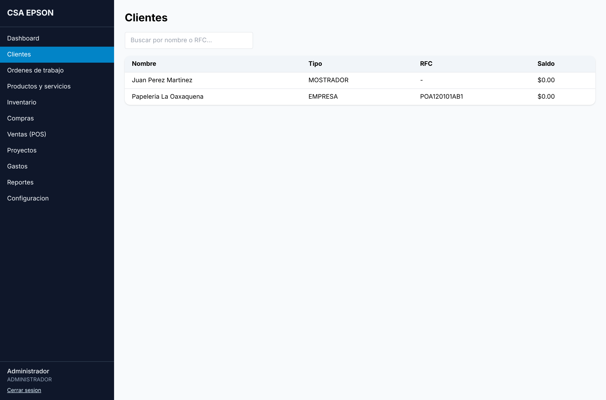
Buscar un cliente
- Entra a Clientes.
- Escribe el nombre o RFC en el buscador; la lista se filtra sola.
Datos que se guardan
Nombre, tipo (mostrador, empresa o garantía EPSON), RFC y régimen fiscal, contactos, direcciones, y su saldo de crédito. Cada cliente guarda el historial de sus equipos y órdenes.
5. Órdenes de trabajo Núcleo
El corazón del taller: cada equipo que entra a reparación genera una orden con folio, y se le da seguimiento hasta la entrega.
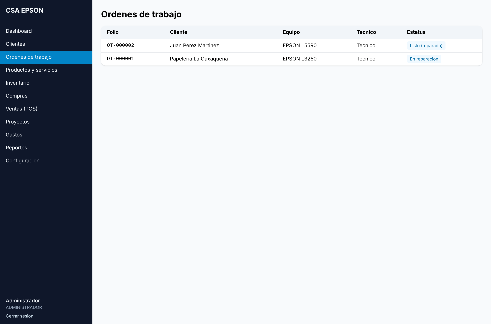
Recibir un equipo (crear la orden)
- Entra a Órdenes de trabajo y crea una nueva.
- Elige el cliente y su equipo (tipo, marca, modelo, número de serie). Si el equipo ya existe, se carga solo.
- Describe la falla reportada y el estado físico; asigna un técnico.
- Al guardar, el sistema genera el folio (ej.
OT-000001) y un código QR para el comprobante del cliente.
El flujo de estatus
Cada cambio de estatus queda en la bitácora con fecha, hora y usuario. Los estatus marcados en el sistema envían aviso al cliente. También existen Esperando refacción, Trámite de garantía EPSON, Abandono y Cancelado.
6. Ventas (POS)
Punto de venta de mostrador: vender productos, cobrar órdenes y hacer el corte de caja.
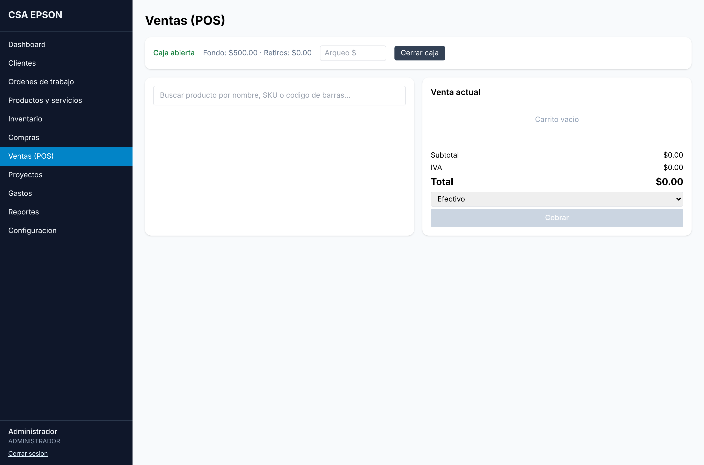
Hacer una venta
- Abre la caja con el fondo inicial (solo una vez por turno).
- Busca el producto por nombre, SKU o código de barras y pulsa Agregar.
- Ajusta cantidades; el total con IVA se calcula solo.
- Elige la forma de pago (efectivo, tarjeta, transferencia, crédito) y pulsa Cobrar.
La venta descuenta el inventario automáticamente. Al terminar el turno, cierra la caja con el arqueo: el sistema calcula el efectivo esperado y la diferencia. También puedes hacer devoluciones (notas de crédito) y cobrar órdenes de trabajo terminadas.
7. Inventario
Existencias del almacén, con costo promedio, mínimos y alertas de reorden.
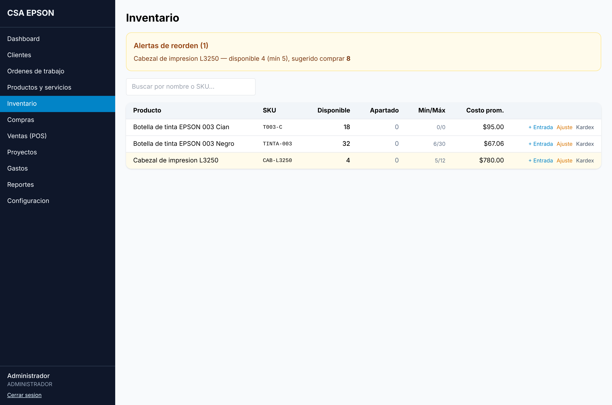
Tareas comunes
- Entrada: registra mercancía que llega con su costo (actualiza el costo promedio).
- Ajuste: corrige la existencia a la cantidad física real, con un motivo.
- Kardex: ver todos los movimientos de un producto con su saldo.
Los productos por debajo de su mínimo se resaltan y aparecen en Alertas de reorden, con la cantidad sugerida a comprar.
8. Compras
Proveedores, órdenes de compra, recepción de mercancía y cuentas por pagar.
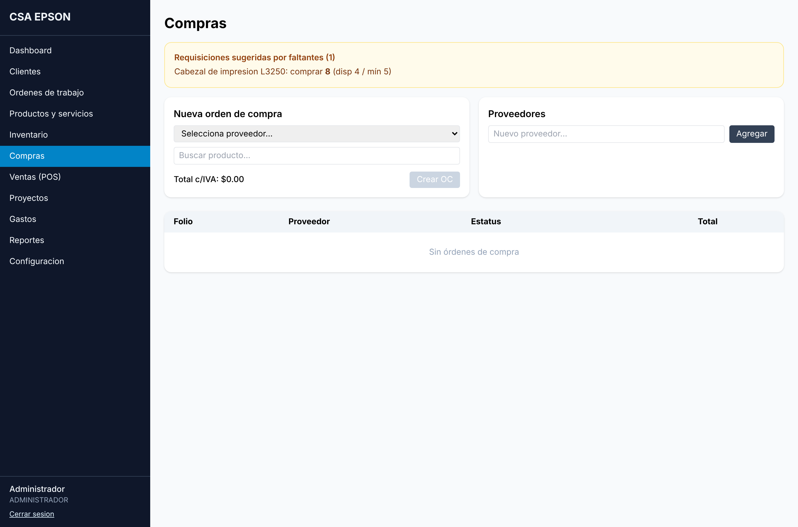
Comprar y recibir
- Da de alta el proveedor (incluye EPSON).
- Crea una orden de compra: elige proveedor, agrega productos con cantidad y costo.
- Cuando llega la mercancía, pulsa Recibir todo (o recibe parcial). Entra automáticamente al inventario con su costo.
- La recepción genera la cuenta por pagar; registra los pagos al proveedor cuando corresponda.
Las requisiciones sugeridas te dicen qué comprar según los faltantes de inventario.
9. Productos y servicios
El catálogo: productos, refacciones y servicios, con sus precios y claves fiscales.
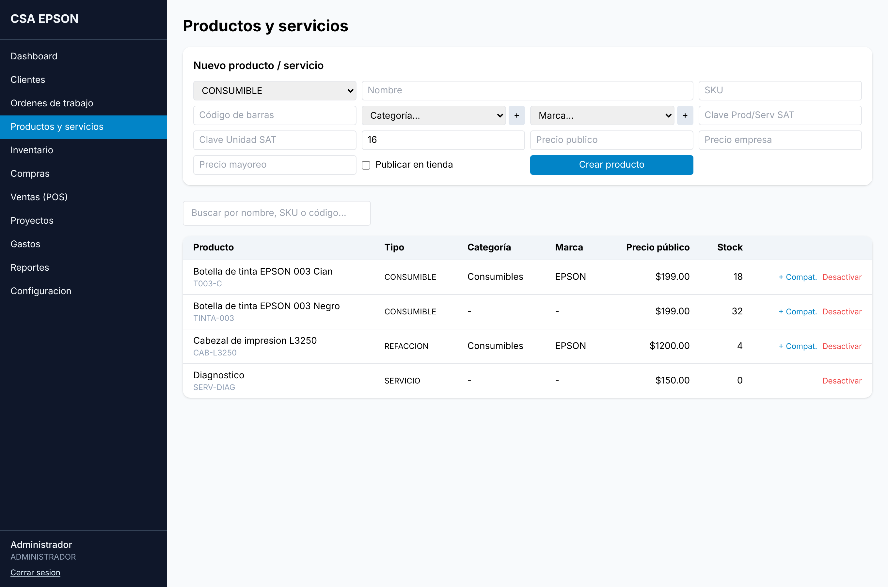
Crear un producto o servicio
- Elige el tipo (consumible, refacción, equipo o servicio) y el nombre.
- Agrega SKU, código de barras, categoría y marca.
- Captura las claves SAT e IVA para facturación.
- Define los precios (público, empresa, mayoreo) y, si aplica, publícalo en la tienda.
En refacciones puedes registrar compatibilidad con modelos de equipo para encontrarlas rápido.
10. Gastos
Gastos del negocio por categoría y centro de costo, caja chica y nómina.
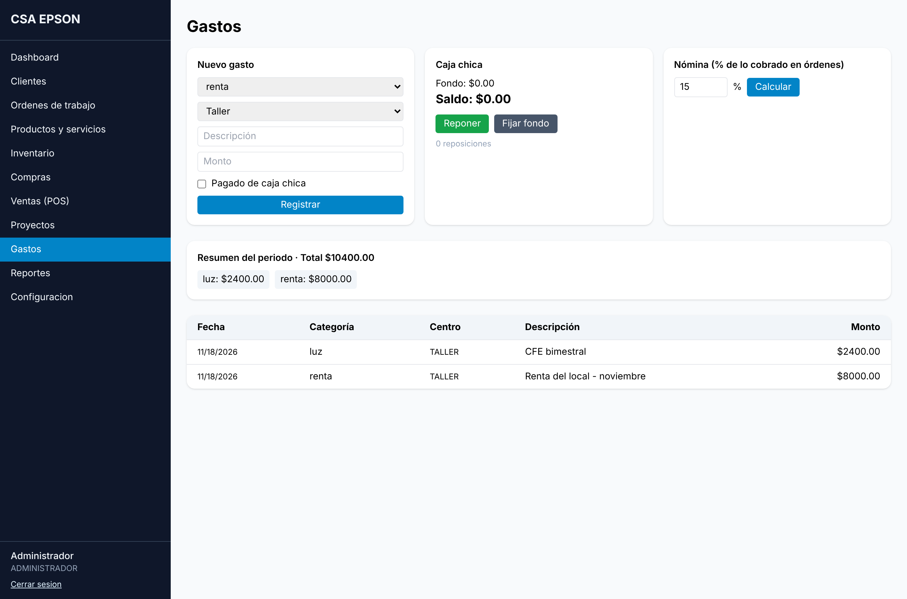
Registrar un gasto
- Elige la categoría (renta, luz, nómina, viáticos, otros) y el centro de costo.
- Captura descripción y monto. Marca caja chica si se pagó de ahí.
La caja chica lleva su saldo: los gastos lo bajan y las reposiciones lo devuelven. La nómina se calcula como un porcentaje de lo cobrado en órdenes del periodo y se registra como gasto.
11. Reportes y analítica
Los números del negocio: ventas, utilidad, inventario, gastos y productividad.
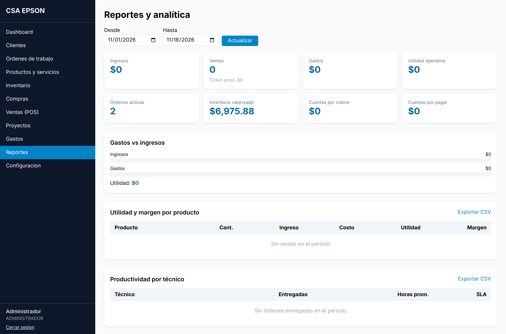
- Elige el rango de fechas y pulsa Actualizar.
- Ves ingresos, gastos, utilidad, inventario valorizado y cuentas por cobrar/pagar.
- Utilidad y margen por producto, y productividad por técnico (tiempo y cumplimiento de SLA).
- Cada tabla se puede exportar a CSV (se abre en Excel).
12. Proyectos
Servicios especiales (redes, infraestructura, etc.): etapas, visitas, materiales y pagos.
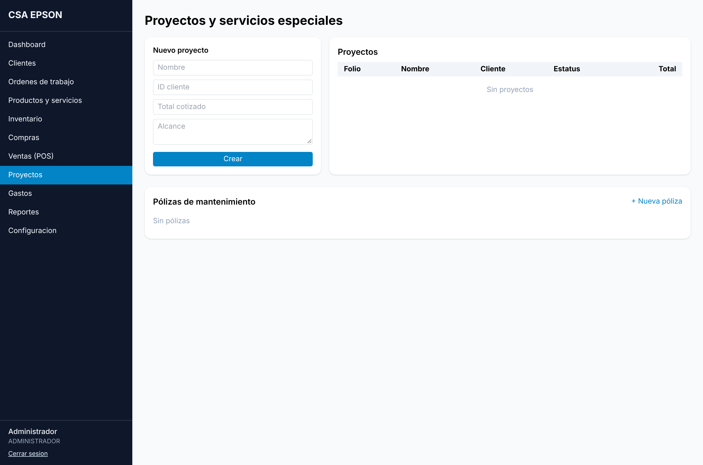
- Crea el proyecto con su cliente, alcance y total cotizado.
- Agrega etapas (con responsable y % de avance) y visitas en sitio.
- Registra materiales (descuentan inventario) y pagos por anticipo, avance o cierre.
Abajo se administran las pólizas de mantenimiento con sus servicios programados.
13. Configuración y seguridad Admin
Ajustes del sistema: empresa, usuarios, plantillas, folios y auditoría. Solo para administradores.
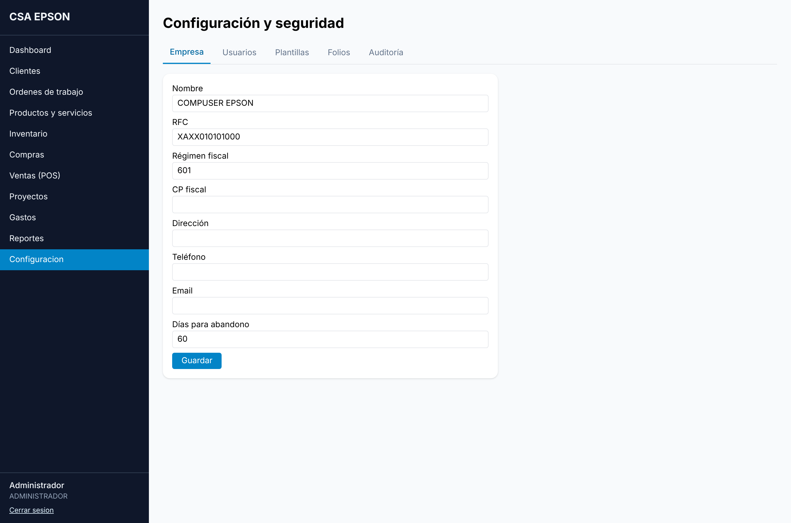
- Empresa: datos y fiscales, política de días de abandono.
- Usuarios: alta de personal, roles (uno o varios) y PIN; activar/desactivar y cambiar contraseñas.
- Plantillas: mensajes de WhatsApp/correo para los avisos.
- Folios: consecutivos de órdenes, ventas y compras.
- Auditoría: bitácora de las acciones de los usuarios.
14. Portal del cliente Público
Una página pública donde el cliente consulta el estatus de su equipo con su folio, sin entrar al sistema.
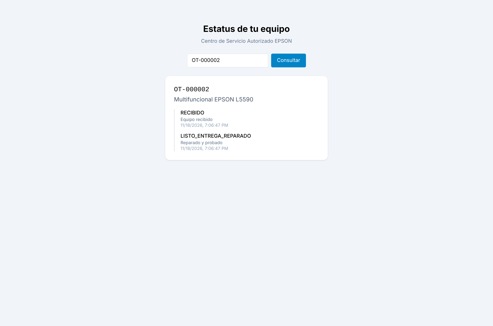
- El cliente entra a la dirección del portal (
/portal). - Escribe su folio (ej.
OT-000002) y pulsa Consultar. - Ve la línea de tiempo de su reparación, sin las notas internas del técnico.
15. Quién usa qué (roles)
Cada persona ve y hace lo que su rol permite. Una persona puede tener varios roles.
| Rol | Para qué | Módulos principales |
|---|---|---|
| Administrador | Control total y configuración | Todos |
| Recepción | Recibir y entregar equipos, seguimiento | Clientes, Órdenes, Portal |
| Técnico | Diagnosticar, reparar, pedir refacciones | Órdenes, Inventario (consulta), Proyectos |
| Cajero | Vender, cobrar, facturar, cortes de caja | Ventas (POS), Clientes |
| Compras y almacén | Comprar, recibir, controlar existencias | Compras, Inventario, Productos |